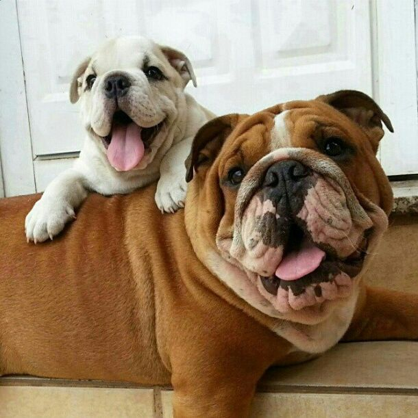

The domestic dog is a domesticated descendant of the wolf. The dog derived from an ancient, extinct wolf, and the modern grey wolf is the dog's nearest living relative. The dog was the first species to be domesticated, by hunter–gatherers over 15,000 years ago, before the development of agriculture.
The simple explanation: you give them food. The simplest explanation for your dog's loyalty is that you give them food and shelter. ... There is a scientific basis for this: domestic dogs are descended from wolves, which man once took in and tamed with shelter and food in return for them acting as guard dogs.
Unlike wolves and other wild animals, dogs are naturally attracted to humans. Experiments conducted by Brian Hare showed that domestication causes animals to have a distinct interest in what we're doing, and also what we're trying to say.
I think we can be confident that dogs know we’re not dogs. After all, those amazing noses can smell the difference. And O’Hare’s work showed that dogs are naturally more sociable with humans than they are with other dogs – they’ll approach, wagging and interested, and often choose the human over another dog.
A Service Dog is a highly skilled dog that is to be used by the client themselves for their own rehabilitation. They are specialized to work with clients with PTSD and other psychological disorders, autism, mobility impairment, hearing impairment, epilepsy, diabetes detection, medical alert, etc.
A service dog is trained to take a specific action whenever required, to assist a person with their disability. The task the dog performs is directly related to their person's disability. For example, guide dogs help blind and visually impaired individuals navigate their environments.
“Dogs often lick people to show affection, as a greeting, or to simply get our attention. Of course, if you happen to have a little food, lotion, or salty sweat on your skin, that may play a role as well.” Along with affection, these are some other things your dog actually wants from you.
1. Their sense of smell is at least 40x better than ours.
2. Some have such good noses they can sniff out medical problems.
3. Dogs can sniff at the same time as breathing.
4. Some are fast and could even beat a cheetah!
5. Dogs don't sweat like we do.
Comments